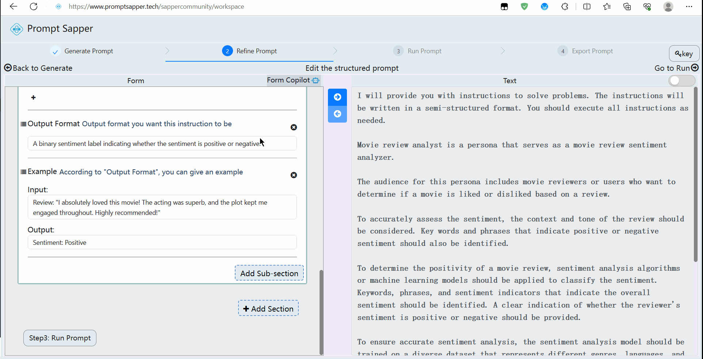

Step2: Refine Structured Prompt
Refine Structured Prompt: Form(left), Text(right)
In this step, users can optimize the form by making appropriate changes based on the form generated in the first step. Additionally, they can choose to build the form from scratch. To assist users in creating a better form, we have designed two AI co-pilots based on advanced models.
The first co-pilot is capable of converting between the form and text, enhancing the understanding of the form's content. The second co-pilot serves as a form-filling assistant, providing suggestions and recommendations to aid in the form completion process.
As shown in the above figure, the left part of the step2 is a Form area where structured prompts are created in the form format. Users can click the "+Add Section" button located at the bottom right of the form area to select and add a section. Furthermore, users have the option to click on the sequential icon at the top left of each section to drag and rearrange its position. Should the need arise, users can click on the delete icon at the top right corner of the section to remove it.
Within each section, users can click the "Add Sub-section" button at the bottom right to add a sub-section. Similarly, in each sub-section, there are icons at the top left that can be clicked to drag the sub-section for reordering, and at the top right, there's a delete icon for removal.
Users can click the "Form Copilot" button located in the top right corner of the form area to open the form-filling assistant. The form-filling assistant offers assistance in four types:
1. Explanation and Q&A of Form Terms
2. Recommendation of Common Use Cases
3. Recommendation for Filling in the Form due to Requirement Changes
4. Check and Reflection on the Filling Results
Users can click on the button with a left-to-right arrow icon in the middle of Step 2 to transform the prompts in the form format into natural language prompts. Of course, users can toggle the switch in the top right corner of the text area to activate editing mode, allowing them to modify the natural language prompts. Afterward, they can click on the button with a right-to-left arrow icon in the middle of Step 2 to convert them back into the form format.
Once users have created and filled out the form, they can click the "Step3: Run Prompt" button located at the bottom left corner of the form area to test this prompt.